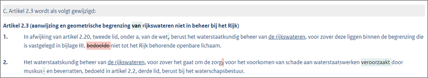

Het maken van een wijzigingsbesluit in renvooiweergave
STOP verplicht het bestuursorgaan om bij wijzigingen van regelingen te werken met expliciete, machineleesbare wijzigingsinstructies. Dit maakt het mogelijk om in veel gevallen geautomatiseerd te consolideren. Dit is een groot verschil met de vroegere werkwijze.
Traditioneel wordt in een wijzigingsbesluit in woorden aangegeven wat er precies gewijzigd wordt. Dit leidt tot besluiten met teksten als 'in de APV van gemeente X wordt in hoofdstuk 3 een artikel ingevoegd, luidende: '. Met deze manier van werken kon nooit automatisch een geconsolideerde versie van een regeling worden gemaakt: zowel het opstellen van wijzigingsbesluiten als het maken van geconsolideerde versies van regelgeving is bij deze aanpak mensenwerk, waarbij een hoge mate van nauwkeurigheid vereist is. Het werken met machineleesbare wijzigingsinstructies zorgt ervoor dat dit werk grotendeels door software kan worden overgenomen, zowel wat betreft het genereren van wijzigingsbesluiten aan de zijde van het bestuursorgaan als wat betreft het genereren van geconsolideerde versies door de LVBB. De manier waarop deze wijzigingsinstructies in STOP worden aangeleverd is de renvooiweergave.
Als bijvoorbeeld een gemeente het omgevingsplan wil wijzigen, dan stelt zij een wijzigingsbesluit vast. Binnen een wijzigingsbesluit moeten de juridische verschillen tussen twee versies van regelingen waar over besloten is, expliciet kenbaar gemaakt worden. Een STOP-wijzigingsbesluit bevat zowel de nieuwe tekst als de oude vervallen tekst in STOP-renvooiweergave. Dit ziet er ongeveer als volgt uit:

Er zijn op grond van STOP verschillende soorten wijzigingen mogelijk, oftewel: verschillende mutatiescenario's. De wijzigingen moeten minimaal op het niveau van de kleinste technische eenheid worden aangeleverd. Het laagste niveau waarop wijzigingen kunnen worden aangeleverd is het artikel respectievelijk, in het geval van een beleidsinstrument, de divisietekst. Als bij voorbeeld een volledig hoofdstuk of paragraaf wijzigt wordt het hele hoofdstuk of de hele paragraaf aangeleverd. Als een artikel of divisietekst geheel of gedeeltelijk wordt gewijzigd, wordt altijd het volledige artikel of de volledige divisietekst aangeleverd. Wanneer het gaat om een structuurwijziging, zoals het toevoegen van een paragraaf, wordt de mutatie aangeleverd vanaf het bovenliggende niveau, oftewel: alle paragrafen in het desbetreffende tekstonderdeel met de nieuwe paragraaf erin toegevoegd.
Bekendmaking van de wijzigingen in het elektronisch publicatieblad gebeurt door middel van deze renvooiweergave. Alleen de daadwerkelijk gewijzigde delen van een regeling moeten worden bekend gemaakt. Vervolgens is in de Viewer Regels op de Kaart van DSO-LV en in de wettenbanken zoals www.cvdr.nl de geconsolideerde versie van de regeling te vinden die als gevolg van de bekendmaking en inwerkingtreding van de wijzigingen ontstaan. In de geconsolideerde regeling is geen renvooiweergave beschikbaar, hierin zijn de wijzigingen dus niet meer zichtbaar.
Binnen het werken met renvooi is ruimte voor het maken van nadere keuzes. Hierbij moet wel rekening worden gehouden met de mogelijke appellabiliteit van het genomen besluit. Wanneer bijvoorbeeld complexe wijzigingen in een tabel plaatsvinden, is het technisch gemakkelijker om de hele tabel te vervangen door een nieuwe versie. In dat geval verdient het aanbeveling om in de toelichting wel aan te geven wat er gewijzigd wordt. Als dat voor de gebruiker voldoende duidelijk is, dan kan deze alleen beroep instellen tegen de wijzigingen, en niet tegen de delen van de tabel die niet gewijzigd zijn.